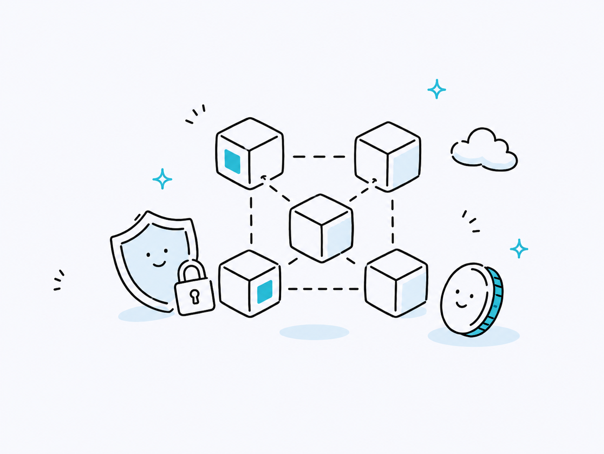
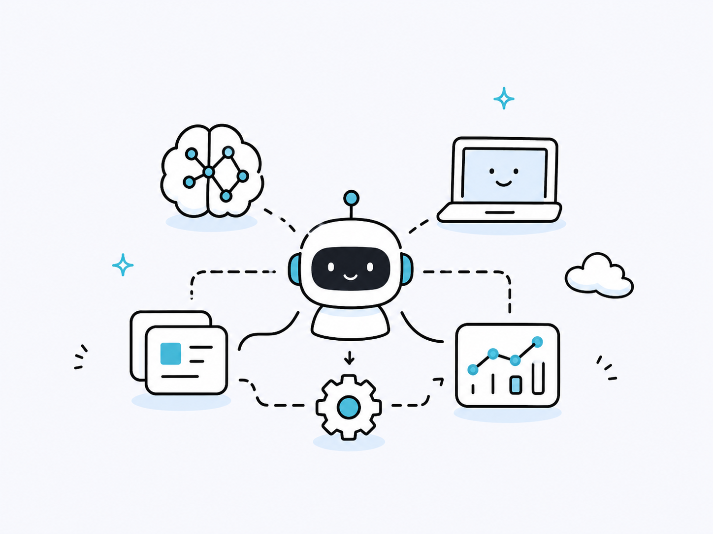
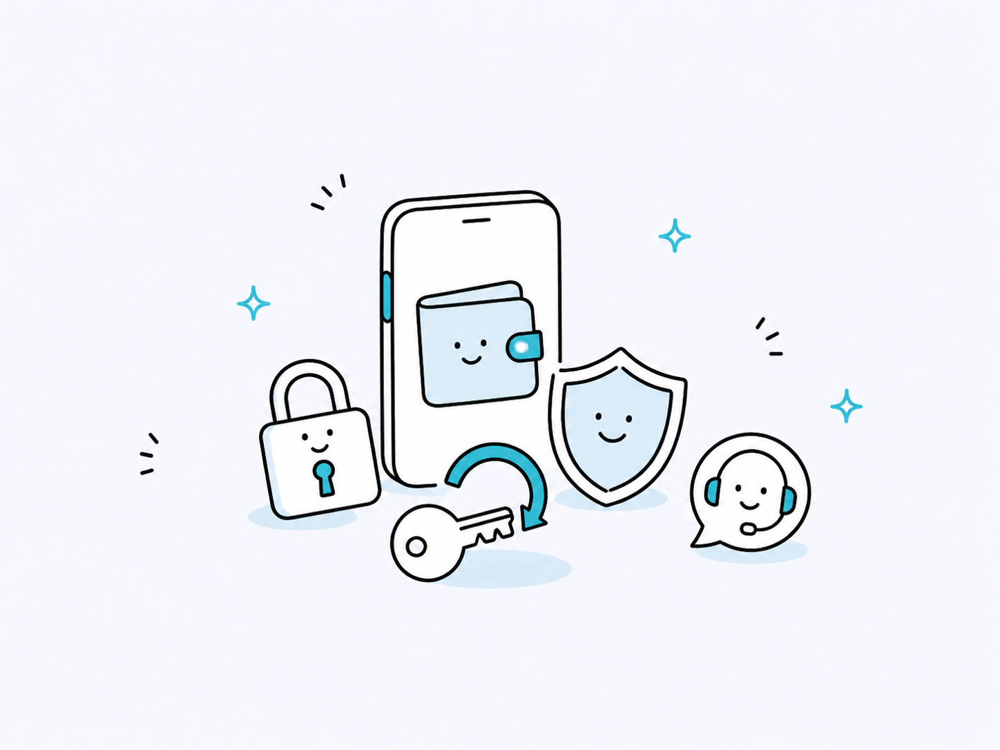
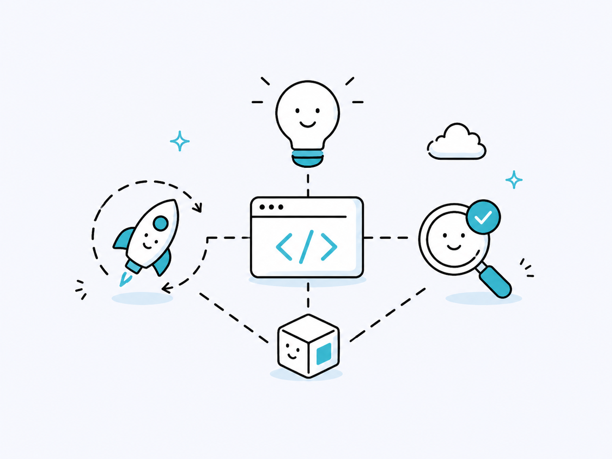

SERVICES
事業内容
BLOCKCHAIN
ブロックチェーン開発・導入支援
分散型ネットワークの特性を活かして従来の仕組みでは難しかった課題を解決し、 スマートコントラクトによる自動化で業務プロセスを効率化します。 技術選定から設計・開発・運用まで、一貫した支援を行います。
-
01
ゼロベースの独自開発
既存ブロックチェーンのカスタマイズにとどまらず、要件に合わせてゼロからブロックチェーンを設計・開発できます。
-
02
8年間の研究開発実績
創業以来続けてきたブロックチェーン研究の蓄積をもとに、世界水準の技術で開発にあたります。
-
03
レイヤ1チェーン開発
高速ブロックチェーンUPCXのメイン開発パートナーとして、高い処理性能と安定性、低い運用コストを実現してきました。
業務プロセスの単純化・自動化や、既存技術では対応が難しい課題の検証など、 導入のかたちは事業に合わせてご提案します。

AI
AI開発・AI導入支援
業務に分散した情報や作業をAIで整理し、進捗管理、会議記録、資料作成、営業管理などの業務を効率化します。 AIエージェントや業務自動化の仕組みを活用し、社内情報の見える化から実行支援まで、事業に合わせたAI活用を支援します。
-
01
業務プロセスの見える化・自動化
チームの進捗、タスク、会議内容、顧客情報などを一元管理し、AIによる要約・文字起こし・資料作成・レポート作成を支援します。人がやるべき判断に集中できるよう、定型作業や情報整理の負担を減らします。
-
02
AIエージェントによる業務支援
AIに質問するだけで必要な情報にアクセスしたり、複数ステップの業務フローを自動化したりできます。外部ツール連携やワークフロー設計にも対応し、企業ごとの業務に合わせたAI活用を提案します。
AIを使いたいが何から始めればよいか分からない段階から、業務課題の整理、ツール設計、AIエージェント開発、運用改善まで、 導入のかたちは事業に合わせてご提案します。

WALLET RECOVERY
ウォレット復旧支援
アクセスできなくなった暗号資産ウォレットの復元を技術的に支援します。 パスワードを忘れてしまった、旧端末や故人の端末に資産が残っている、ウォレットの種類が分からない—— そうした状況でも、暗号技術とブロックチェーンの専門知識を活かし、安全な手順で対応します。
-
01
幅広いケースに対応
さまざまな暗号資産やウォレットに対応。手がかりが少ない状況でも、いまお手元にある情報をもとに復元の可能性を確認できます。
-
02
着手金0円の成功報酬制
初期費用はかかりません。報酬は復元に成功した場合のみで、難易度に応じた料率を事前にご提示します。
-
03
秘密保持への配慮
ご相談内容はプライバシーと秘密保持に配慮して丁寧に取り扱います。専門用語をできるだけ使わず、初めての方にも分かりやすくご案内します。
※詳しくは 仮想通貨ウォレット復旧相談窓口 をご覧ください。

DEVELOPMENT
受託開発・PoC支援
先端技術を用いたシステムの受託開発と、事業化前の検証（PoC）を支援します。 ブロックチェーン・AI・暗号技術の研究開発で培った知見をもとに構想を動くかたちにし、 小さく試し、確かめてから本開発へ進める進め方を大切にしています。
-
01
先端技術に強い受託開発
ブロックチェーン、AIなど、実装事例の少ない領域のシステム開発に対応します。要件定義から設計・開発・運用まで一貫してお引き受けします。
-
02
小さく確かめるPoC設計
目的と検証項目を整理し、最小限の構成で技術的な実現性と事業効果を検証します。本開発に進むか、方向を変えるかを判断できる材料をご提供します。
-
03
検証・開発・運用まで伴走
PoCで終わらせず、検証結果を踏まえた本開発、リリース後の運用・改善まで継続して支援します。
「この技術が自社の事業に使えるか確かめたい」という段階からご相談いただけます。 導入のかたちは事業に合わせてご提案します。
この事業について問い合わせる